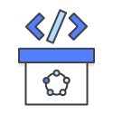

1 - Définitions et principes
Définition des termes Devops et NoOps
1.1 - Devops : Défintion générale:


D'après la définiton du site AWS :
DevOps est une combinaison de philosophies culturelles, de pratiques et d'outils qui améliore la capacité d'une entreprise à livrer des applications et des services à un rythme élevé. Il permet de faire évoluer et d’optimiser les produits plus rapidement que les entreprises utilisant des processus traditionnels de développement de logiciels et de gestion de l’infrastructure. Cette vitesse permet aux entreprises de mieux servir leurs clients et de gagner en compétitivité.
Dans un modèle DevOps, les équipes de développement et d'opérations ne sont plus isolées. Il arrive qu'elles soient fusionnées en une seule et même équipe. Les ingénieurs qui la composent travaillent alors sur tout le cycle de vie d'une application, de la création à l’exploitation, en passant par les tests et le déploiement, et développent toute une gamme de compétences liées à différentes fonctions.
1.2 - Devops : Principe et pratiques :
Intégration continue: L'intégration continue est une méthode de développement de logiciel dans laquelle les développeurs intègrent régulièrement leurs modifications de code à un référentiel centralisé, suite à quoi des opérations de création et de test sont automatiquement menées. Les principaux objectifs de l'intégration continue sont : trouver et corriger plus rapidement les problèmes, améliorer la qualité des logiciels et réduire le temps nécessaire pour valider et publier de nouvelles mises à jour de logiciels.
Livraison continue: La livraison continue est une méthode de développement de logiciels dans laquelle les changements de code sont automatiquement générés, testés et préparés pour une publication dans un environnement de production. Cette pratique étend le principe de l'intégration continue en déployant tous les changements de code dans un environnement de test et/ou un environnement de production après l'étape de création. Une bonne livraison continue permet aux développeurs de toujours disposer d'un artéfact prêt au déploiement ayant suivi un processus de test normalisé.
Microservices: L'architecture de microservices est une approche de conception qui consiste à diviser une application en un ensemble de petits services. Chaque service est exécuté par son propre processus et communique avec les autres services par le biais d'une interface bien définie et à l'aide d'un mécanisme léger, typiquement une interface de programmation d'application (API) HTTP. Les microservices sont conçus autour de capacités métier ; chaque service est dédié à une seule fonction. Vous pouvez utiliser différents frameworks ou langages de programmation pour écrire des microservices et les déployer indépendamment, en tant que service unique ou en tant que groupe de services.
Infrastructure en tant que code: L'infrastructure en tant que code est une pratique qui implique la mise en service et la gestion de l'infrastructure à l'aide de code et de techniques de développement de logiciels, notamment le contrôle des versions et l'intégration continue. Le modèle de cloud axé sur les API permet aux développeurs et aux administrateurs système d'interagir avec l'infrastructure de manière programmatique et à n'importe quelle échelle, au lieu de devoir installer et configurer manuellement chaque ressource. Ainsi, les ingénieurs peuvent créer une interface avec l'infrastructure à l'aide d'outils de code et traiter l'infrastructure de la même manière qu'un code d'application. Puisqu'ils sont définis par du code, l'infrastructure et les serveurs peuvent être rapidement déployés à l'aide de modèles standardisés, mis à jour avec les derniers correctifs et les dernières versions ou dupliqués de manière répétable.




1.3 - NoOps :Définition générale :
NoOps: (no operations) est le concept selon lequel un environnement informatique peut devenir si automatisé et abstrait de l'infrastructure sous-jacente qu'il n'est pas nécessaire d'avoir une équipe dédiée pour gérer les logiciels en interne.L'objectif est d'automatiser complètement le déploiement, la surveillance et la gestion des applications et de l'infrastructure sur laquelle elles fonctionnent.
Ⓒhttps://www.channelfutures.com/technologies/msps-and-managed-services-are-key-to-the-post-devops-world
1.4 - NoOps : Principe et pratiques :
La Plateforme en tant que Service (PaaS): est un modèle de Cloud Computing où un fournisseur de services Cloud propose des outils hardware et logiciels en tant que service via internet, permettant à l’utilisateur de développer des applications. Le hardware et le software sont hébergés sur l’infrastructure du fournisseur. Ainsi, les utilisateurs n’ont pas besoin d’installer leur propre hardware et leurs logiciels en interne pour développer ou lancer de nouvelles applications.
Le FaaS (Function-as-a-Service): est un service Cloud lié au serverless computing et aux architectures servereless. Les développeurs de logiciels peuvent s’en servir pour déployer une fonction individuelle. La fonction démarre en quelques millisecondes et traite des requêtes individuelles, puis le processus s’achève. Les principes élémentaires du FaaS sont l’abstraction complète des serveurs à distance du développeur, et les services "event-driven" et scalables instantanément.
Serverless computing: désigne l'architecture native du cloud qui vous permet de déléguer davantage de responsabilités opérationnelles à AWS, ce qui augmente votre agilité et votre innovation. Le sans serveur permet de concevoir et d'exécuter des applications et des services sans se soucier des serveurs. Cela permet d'éliminer les tâches de gestion des infrastructures, comme le provisionnement de serveur ou de cluster, la correction, la maintenance des systèmes d'exploitation et la mise en service de capacités.